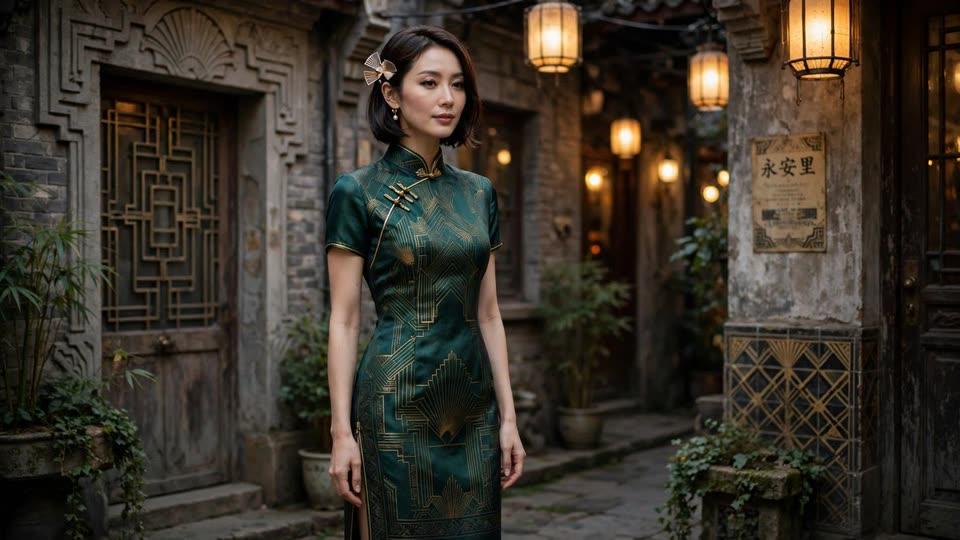

Modern qipao-inspired dress in an old Shanghai lane-house courtyard: warm lantern light, silk sheen, full-length 85mm editorial

A wardrobe still from GPT Image 2.6 that updates a classic silhouette: a modern qipao-inspired dress on an adult woman, shot full length at 85mm in a softly lit old Shanghai lane-house courtyard with only practical lantern light. The six-line SUBJECT / LIGHT / CAMERA / LOCK / NEGATIVE / TONE format locks the "silk sheen and the standing silhouette" and sets an art-deco palette (warm amber against cool stone). The creator's note is a useful wardrobe tip: the collar height decides whether it reads as qipao ("too high and the neck disappears; too low and it stops reading as qipao"). Good as a first frame for heritage-fashion, lunar-new-year or hospitality campaigns.
Prompt
SUBJECT — modern qipao-inspired dress on an elegant adult woman, softly lit old Shanghai lane-house courtyard LIGHT — warm lantern glow, practical sources only CAMERA — 85mm, full outfit visible, editorial framing LOCK — silk sheen and the standing silhouette NEGATIVE — no extra limbs, no text, no watermark, no plastic skin TONE — art deco restraint, warm amber against cool stone
Our Seedance 2.5 adaptation
[ADAPTED for Seedance 2.5 by Grok Bot; not the creator's prompt. Follows the official BytePlus Seedance 2.5 prompt guide and its official sd25-pe prompt-optimizer skill: parameters only on the API line (not in the prompt body), subject + action + scene, then visuals, camera (move, subject, start, direction, arrival) and sound; only the source's own exclusions are kept.] API: duration 6, ratio adaptive, resolution 1080p, generate_audio true; first_frame = the GPT Image 2.6 qipao still. Flash draft: model dreamina-seedance-2-5-flash-261115, resolution 720p. 【Subject】The woman exactly as in the first frame, in the modern qipao-inspired silk dress, standing in the old Shanghai lane-house courtyard with warm lanterns and cool grey stone. The collar height and the standing silhouette never change. 【Action】She turns slowly from three-quarter view to face the camera and takes one small step forward; the silk catches a moving sheen from the lanterns; a lantern sways gently in the breeze. 【Camera】Full-length 85mm framing at eye level, a very slow push-in that keeps the whole outfit in frame. 【Visuals】Art-deco restraint, warm amber against cool stone, practical light only. No extra limbs, text, watermark or plastic skin. 【Sound】Soft evening courtyard ambience, a distant erhu phrase, silk rustle, light footsteps on stone.
Tags: GPT Image 2.6, wardrobe, qipao-inspired, silk sheen, silhouette lock, practical lantern light, 85mm full length, art deco tone, six-line format, first-frame still